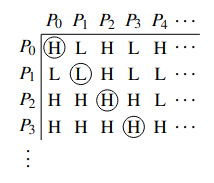

Computability
Table of Contents
The question of computability asks if there is any problem that computers cannot solve, and similarly, is there any true mathematical theorem that cannot be proved? We see that the answers to both of these questions are true.
1. Halting Problem
A computer program can either halt (stops after some finite time), or run forever. The Halting Problem asks if we can always distinguish whether a program halts or not.
1.1. Turing Machine
First, we must define what a computer is. The Turing machine is the simplest representation of a computer, which consists of an infinite storage tape and a finite control state. The state has a read/write had that points to anywhere on the tape.
The head can either move left, move right, or stop the program. This is shown by the transition function:
\begin{align} \delta: Q \times \{0. 1\} \rightarrow Q \times \{0, 1\} \times \{L, R, S\} \end{align}While this model of a computer is primitive, it can be shown that it is equivalent to more complex models like random access machines, quantum computers, etc.
1.2. Programs as Data
The program of the Turing machine is just a finite string of bits. That means that computer programs and data are indistinguishable, which allows us to feed programs to another program as input. This type of Turing machine is known as a universal Turing machine.
1.3. Self-References
When we have self-references, logical paradoxes may occur. Consider the following statements that can neither be true nor false:
- “This sentence is false.”
- “The barber shaves those, and only those, who do not shave themselves.” (who shaves the barber?)
1.4. Turing’s Theorem
Theorem (Turing 1936): There is no computer program that solves the Halting Problem for all inputs.
Proof: We proceed by contradiction using diagonalization. Assume that there exists a program that solves the Halting Problem. Since programs and their inputs are just finite strings in \(\{0,1\}^*\), we can write a table of all possible programs and inputs:

Since we assumed that we can solve the Halting Problem, we can determine, for every program-input combination in the table (the columns are inputs and the rows are programs), whether it halts or not.
Then, consider the following program: if the input \(P\) halts when given \(P\) to itself, then loop; otherwise, halt. Due to diagonalization, this program is different from every program in the table, so it must not be in the table. Yet, since programs are just binary strings, the table must contain every program, which means we have a contradiction. Hence there cannot exist a program that solves the Halting Problem. \(\square\)
2. Gödel’s Incompleteness Theorem
Theorem (Gödel 1931): There does not exist a proof system for arithmetic that is both consistent° and complete.°
Sketch of Proof: We can write a statement in arithmetic° of the form \(S: \text{This statement is not provable}\). Then, we have two cases. First, if \(S\) is provable, then by consistency \(S\) is true, so \(S\) is not provable, which is a contradiction. Second, if \(S\) is not provable, then by completeness \(S\) must be false, which means \(S\) is provable, which is also a contradiction.
Proof via Halting Problem: Given \(\langle M, x\rangle\) we can write an arithmetic statement:
\begin{align} S: \exists z(z \text{ encodes a halting execution sequence of } M \text{ on input }x) \notag \end{align}Then we can solve the Halting Problem by searching for a proof of either \(S\) or \(\lnot S\). If our proof system is complete and consistent, then this always decides the Halting Problem. But this is a contradiction, so a proof system cannot be both complete and consistent. \(\square\)